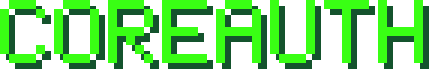

CoreAuth

Un servicio de autenticación e integración para empresas, construido durante mi práctica profesional.
Una API en ASP.NET Core que identifica a las empresas cliente, controla desde dónde pueden conectarse y las comunica con un sistema interno de la organización. Incluye un panel de administración y una web para los clientes.
- PRÁCTICA PROFESIONAL
- CÓDIGO PRIVADO
- C# / .NET 8
- ASP.NET CORE
- POSTGRESQL
El encargo
La organización necesitaba que empresas externas pudieran operar contra uno de sus sistemas internos de forma segura, sin darles acceso directo a la base de datos.
La solución fue una API que queda en medio: es la única pieza que habla con las bases de datos. El panel, la web y los sistemas de las empresas son clientes HTTP de ella.
Desarrollé el sistema completo durante la práctica, entre septiembre y noviembre de 2026, a partir de las instrucciones y especificaciones que fui recibiendo de la jefatura.
Las cuatro piezas
El núcleo
Autentica a las empresas con tokens JWT, controla el acceso por lista blanca de direcciones IP, registra el tráfico y la auditoría, y expone las operaciones del sistema interno con el que se integra.
Administración en Blazor
Una aplicación en Blazor WebAssembly para gestionar empresas, usuarios, credenciales y direcciones autorizadas, y para revisar tráfico, sesiones y auditoría.
Portal de clientes en React
Consulta pública de estado, cotizador y un área privada con historial, filtros, gráficos y exportación.
Base de datos propia
PostgreSQL 16 administrado con Entity Framework Core y migraciones versionadas.
Lo interesante por dentro
Clean Architecture, con las dependencias hacia el centro
Cuatro capas: dominio, aplicación, infraestructura y API. El dominio no depende de nada. El panel de administración referencia solo la capa de aplicación, de donde toma los contratos que comparte con la API.
Dos bases de datos, dos formas de acceso
La base propia se maneja con Entity Framework Core y migraciones. Sobre la base del sistema interno nunca se usa un ORM: el acceso es con SQL parametrizado y se limita a las operaciones que ese sistema expone para la integración.
Errores que dicen su causa exacta
Cada error devuelve un código de texto propio, además del código HTTP. El catálogo completo está documentado y aparece en Swagger junto a cada endpoint.
Degradación controlada
Si el sistema interno deja de responder, la integración queda marcada como degradada y el resto del servicio sigue funcionando. El endpoint de estado indica el motivo.
Pruebas contra una base de datos real
Las pruebas de integración levantan un PostgreSQL en un contenedor para cada ejecución, junto con una réplica del sistema interno con sus funciones y permisos. Incluyen pruebas que intentan saltarse cada control de seguridad.
Todo en contenedores
La API, el panel, la web y la base se levantan con Docker Compose. nginx sirve el panel y la web, con una política de seguridad de contenido.
Números
Arquitectura
Las dependencias apuntan siempre hacia el centro: API, Infrastructure, Application y Domain.
Tecnologías
| API | ASP.NET Core 8, C# 12 |
|---|---|
| Panel | Blazor WebAssembly 8, MudBlazor |
| Web de clientes | React 18, Vite, Recharts |
| Base de datos | PostgreSQL 16 |
| Acceso a datos | Entity Framework Core 8 y Npgsql con SQL parametrizado |
| Autenticación | JWT firmados, tokens de renovación rotativos, BCrypt |
| Documentación | Swagger / OpenAPI 3 |
| Registro | Serilog |
| Pruebas | xUnit, NSubstitute, Testcontainers |
| Contenedores | Docker, Docker Compose y nginx |
Cómo se trabajó
Cada instrucción, trazada
Un documento cita cada instrucción recibida y señala dónde y cómo se cumple en el código.
Decisiones con su porqué
Un registro de decisiones de diseño explica por qué se tomó cada una y qué costo tiene, para no volver a discutir lo ya resuelto.
Documentado para quien sigue
Guías para probar el sistema a mano, catálogo de errores y permisos por endpoint, y diagramas del sistema.